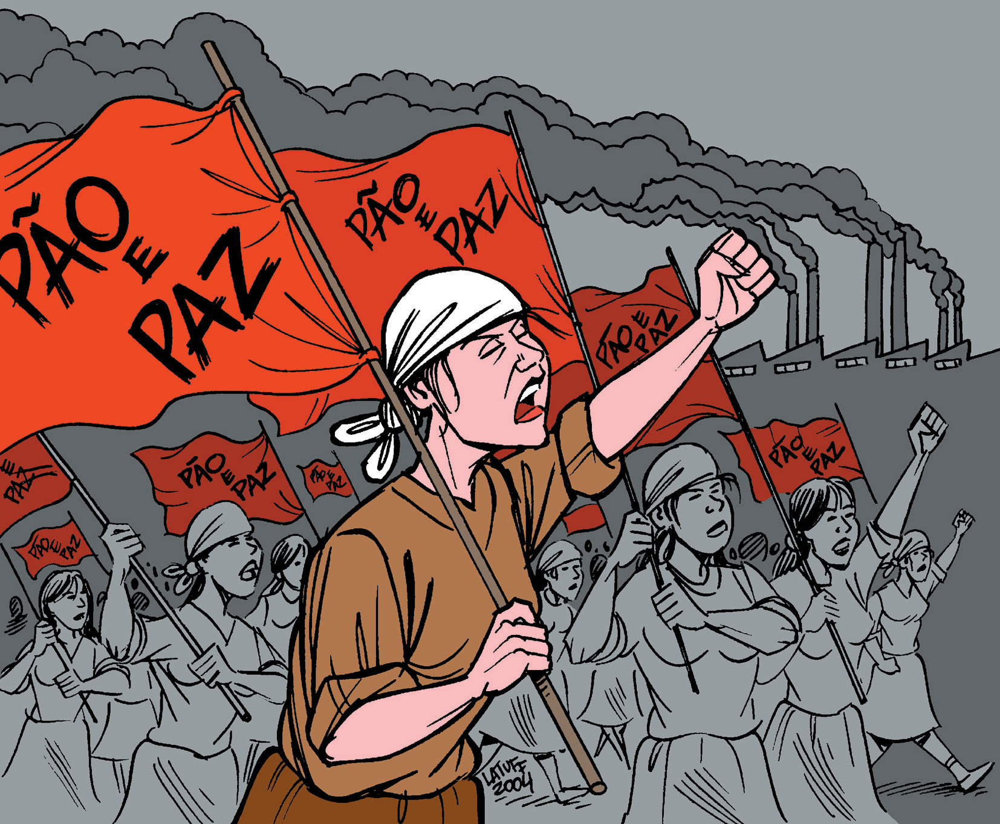

1. Quando surgiu?
O processo de criação começou a partir da manifestação de 1995 no Quebec. O primeiro encontro internacional para definir a plataforma e as representantes ocorreu em 1998. No entanto, a Marcha Mundial das Mulheres foi formalmente convocada e veio a público como uma grande campanha global ao longo do ano 2000.
2. Por qual razão surgiu?
A inspiração partiu de uma manifestação realizada em 1995, em Quebec, onde 850 mulheres marcharam 200 quilômetros pedindo “Pão e Rosas”. A partir disso, buscou-se criar uma campanha global para eliminar a pobreza e a violência, enfrentando o capitalismo patriarcal, racista e neoliberal.
3. Pelo que estão lutando?
Lutam por transformação global em quatro eixos: Autonomia econômica (igualdade salarial), Bens comuns (agroecologia), Paz e desmilitarização, e o Fim da violência contra as mulheres. Também defendem a legalização do aborto e o fim do racismo.
4. Formas de luta
Ocupação de espaços públicos, Batucada Feminista (uso de tambores), ações criativas (lambe-lambe), construção de alianças com Via Campesina e CUT, e formação política constante.